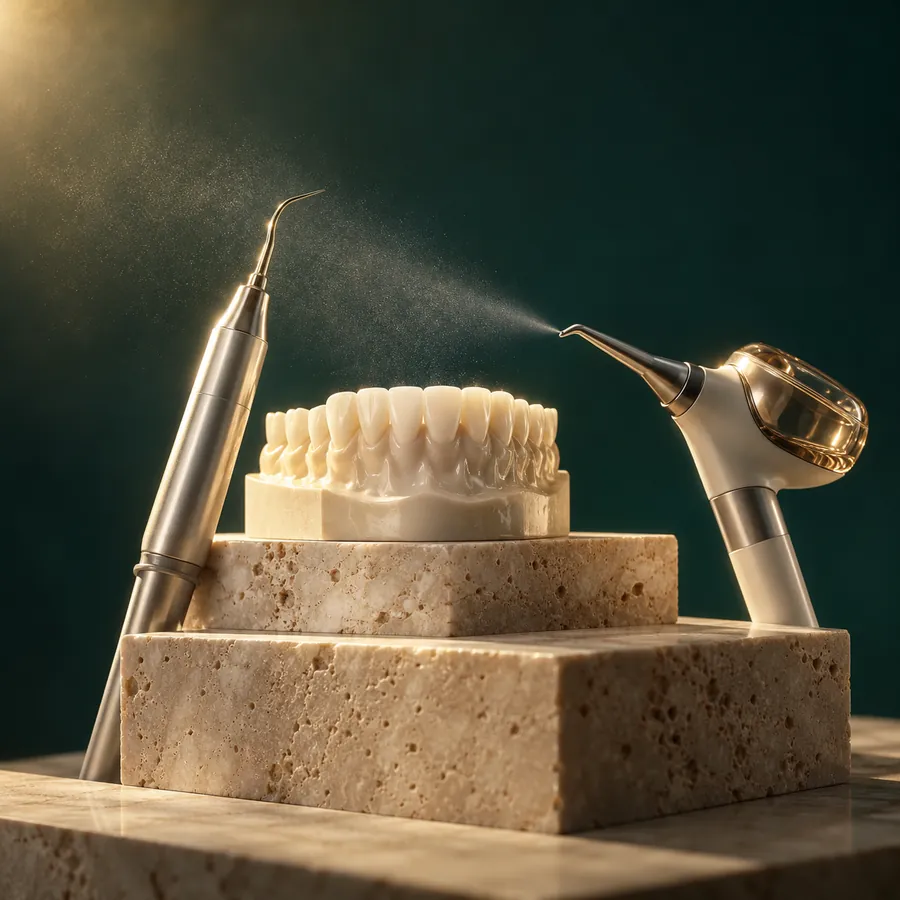

Профессиональная гигиена
Профессиональная чистка зубов в Балашихе
Профессиональная чистка помогает удалить мягкий налёт и зубной камень, снизить риск воспаления дёсен и поддерживать здоровье зубов. Врач оценивает состояние эмали, дёсен и налёта, чтобы подобрать комфортный и безопасный план процедуры.
- Удаление налёта и зубного камня
- Оценка состояния дёсен
- Рекомендации по домашнему уходу

Показания
Когда нужна профессиональная чистка
Появился зубной камень
Твёрдые отложения нельзя полностью убрать обычной щёткой, поэтому требуется профессиональная гигиена.
Кровоточат дёсны
Кровоточивость может быть связана с налётом и воспалением, поэтому важно пройти осмотр.
Есть налёт от кофе или чая
Пигментированный налёт может делать улыбку визуально темнее и требует аккуратного удаления.
Давно не было профилактики
Регулярная гигиена помогает контролировать налёт и вовремя замечать изменения.
Важно знать
Почему гигиену лучше делать регулярно
Налёт и зубной камень могут поддерживать воспаление дёсен и повышать риск кариеса. Регулярная профессиональная гигиена помогает контролировать состояние полости рта и корректировать домашний уход.
Налёт накапливается постепенно
Даже при хорошем домашнем уходе часть налёта может оставаться в труднодоступных зонах.
Дёсны могут воспаляться
Зубной камень и налёт могут поддерживать кровоточивость, отёк и неприятный запах.
Профилактика проще лечения
Регулярный контроль помогает раньше заметить изменения и снизить риск осложнений.
Процедура
Что входит в профессиональную чистку
Состав профессиональной гигиены зависит от выбранного варианта: врач оценивает состояние зубов и дёсен, объём отложений и подбирает необходимые этапы. Отдельные позиции прайса включают ультразвук, Air Flow или комплекс с фторированием.
Удаление мягкого налёта
Поверхности зубов очищаются от мягкого и пигментированного налёта.
Удаление зубного камня
Твёрдые отложения удаляются профессиональными инструментами по показаниям.
Полировка поверхности зубов
Полировка помогает сделать поверхность более гладкой и комфортной.
Рекомендации по уходу
Врач подбирает щётку, пасту и дополнительные средства домашней гигиены.
Этапы
Этапы процедуры
Осмотр
Врач оценивает состояние зубов, дёсен, налёта и зубного камня.
Удаление твёрдых отложений
Зубной камень удаляется профессиональными инструментами по показаниям.
Удаление мягкого налёта
Поверхности зубов очищаются от мягкого и пигментированного налёта.
Полировка
Зубы полируются, чтобы поверхность была более гладкой и комфортной.
Контроль чувствительности
Врач оценивает состояние эмали и дёсен после процедуры.
Рекомендации по уходу
Пациент получает рекомендации по щётке, пасте, флоссу, ёршикам или ирригатору.
План лечения
Что врач учитывает перед чисткой
Количество налёта
Врач оценивает объём мягкого и пигментированного налёта на зубах.
Наличие зубного камня
Твёрдые отложения влияют на объём процедуры и выбор инструментов.
Состояние дёсен
Важно понять, есть ли признаки воспаления, отёка или кровоточивости.
Чувствительность зубов
При чувствительности врач подбирает более комфортный режим процедуры.
Наличие реставраций
Пломбы, коронки и виниры требуют аккуратной оценки перед гигиеной.
Ортодонтические конструкции
Брекеты, ретейнеры и другие конструкции требуют особого внимания при чистке.
Точный план процедуры можно составить только после консультации и осмотра.

Стоимость
Цены на профессиональную гигиену
Ниже собраны пять основных позиций действующего прайса. Услуги отличаются составом: отдельно доступны ультразвук, Air Flow, их сочетание и комплексная гигиена с фторированием.
Подходящий вариант профессиональной гигиены врач определяет с учётом состояния полости рта, объёма зубных отложений и наличия ортодонтических конструкций. Актуальная стоимость дополнительных процедур указана в полном прайсе.
Комплексная профессиональная гигиена полости рта и зубов (ультразвук, Air Flow, фторирование) Первичная
Профессиональная гигиена полости рта и зубов (ультразвук + Air Flow)
Профессиональная гигиена полости рта и зубов (Air Flow)
Профессиональная гигиена полости рта и зубов (ультразвук)
Комплексная профессиональная гигиена полости рта и зубов (ультразвук, Air Flow, фторирование) с брекет-системой
FAQ
Частые вопросы
Зачем нужна профессиональная чистка зубов?
Профессиональная чистка помогает удалить налёт и зубной камень, которые сложно убрать дома, а также оценить состояние дёсен и скорректировать домашний уход.
Больно ли делать чистку?
Ощущения зависят от чувствительности зубов, состояния дёсен и объёма отложений. Врач заранее оценивает ситуацию и подбирает комфортный режим процедуры.
Как часто нужна профессиональная гигиена?
Периодичность зависит от состояния зубов и дёсен, скорости образования налёта, наличия брекетов, коронок или имплантов. Рекомендацию даёт врач после осмотра.
Можно ли делать чистку при чувствительности зубов?
Можно, если врач после осмотра не видит противопоказаний. При чувствительности подбирают более щадящий режим и дают рекомендации по уходу.
Помогает ли чистка отбелить зубы?
Чистка удаляет налёт и поверхностные пигменты, поэтому зубы могут выглядеть светлее. Это не заменяет профессиональное отбеливание.
Можно ли делать чистку с брекетами?
Да, при ортодонтическом лечении профессиональная гигиена особенно важна. Протокол подбирается индивидуально с учётом конструкции.
Что нельзя делать после чистки зубов?
Рекомендации зависят от проведённой процедуры и состояния эмали. Врач объяснит, какие продукты и привычки лучше ограничить в первые часы после чистки.
Услуги
Связанные услуги


Консультация
Хотите пройти профессиональную чистку зубов?
Запишитесь на консультацию. Врач оценит состояние зубов и дёсен, подберёт подходящий объём процедуры и даст рекомендации по домашнему уходу.
Имеются противопоказания, необходима консультация специалиста.